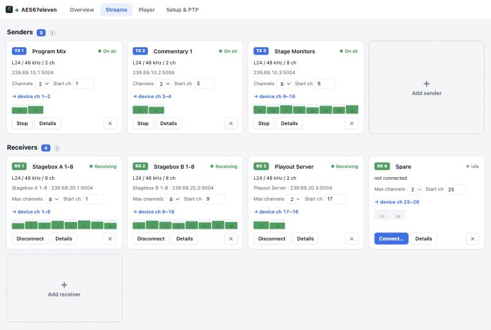
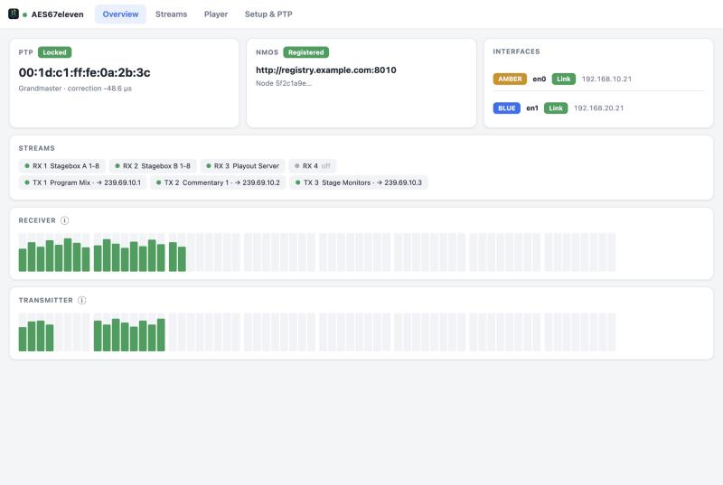

64 channels in and out, a PTP-disciplined device clock and full NMOS control. Free and open source.

One Core Audio device that any app can play to and record from — and behind it a complete AES67 node that behaves like broadcast hardware on the network.
The device clock follows the PTP grandmaster directly. No sample-rate conversion in the audio path — samples run 1:1 on the media clock.
IS-04 registration, IS-05 connection management, IS-12 control and IS-13 annotation. BCP-008 monitors report stream health to your controller.
ST 2022-7 on two interfaces: senders duplicate onto both legs, receivers merge them without a click.
Add a sender or receiver, pick the channel count and the first device channel. Up to 64 of each, 8 channels per stream.
Four decks play WAV or MP3 straight onto device channels, with loop and auto-play at service start — handy as a test source.
The same engine runs headless on Linux as a playout and monitoring node. Multi-arch image for amd64 and arm64.
A web interface on the local machine — no extra app to install.

AES67eleven is built from source — two commands on a Mac, one for the Docker gateway.
Needs the Xcode Command Line Tools and CMake.
git clone https://github.com/Gemini2350/aes67eleven.git cd aes67eleven ./scripts/install.sh
Installs the audio driver and the menu bar app, then open
http://localhost:8180. Use wired Ethernet for PTP.
Headless playout and monitoring node, no soundcard.
docker run -d --name aes67eleven \ --network host --cap-add SYS_NICE \ -v aes67-data:/data \ ghcr.io/gemini2350/aes67eleven-gw:latest
Host networking is required for multicast and PTP. See the README for the config file.
AES67eleven is built by the people behind Simplexity — vendor-independent consulting and training for AES67, Dante, SMPTE ST 2110, IPMX, NMOS and PTP, based in Zürich.
AES67eleven is free and open source under the MIT license. If it saves you time or a hardware purchase, a donation helps keep it maintained across macOS releases.